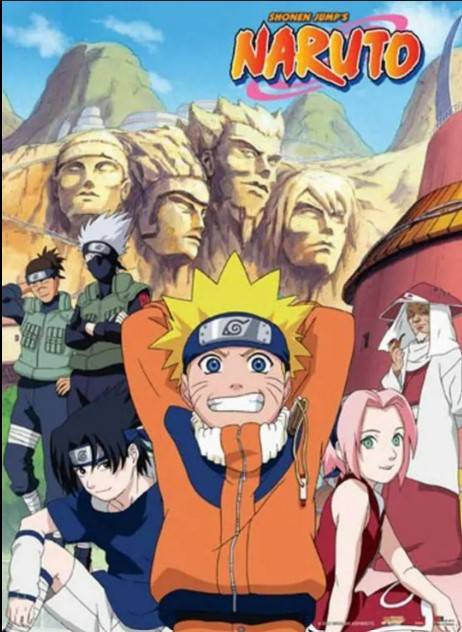
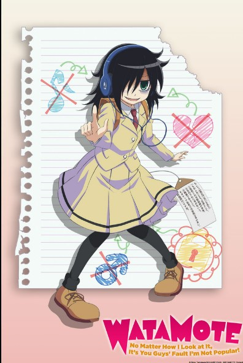

COMEDY

NARUTO
Genres: Adventure, Fantasy comedy, Martial arts
Episodes:220
Rating: 8.4/10 · 101,855 votes
Naruto is a Japanese manga series written and illustrated by Masashi Kishimoto. It tells the story of Naruto Uzumaki, a young ninja who seeks
recognition from his peers and dreams of becoming the Hokage, the leader of his village. The story is told in two parts – the first set in
Naruto's pre-teen years, and the second in his teens. The series is based on two one-shot manga by Kishimoto: Karakuri (1995), which earned
Kishimoto an honorable mention in Shueisha's monthly Hop Step Award the following year, and Naruto (1997).

THAT TIME I GOT REINCARNATED AS A SLIME
Genres: Comedy, Isekai
Episodes:51
Rating: 8.2/10 · 10,724 votes
That Time I Got Reincarnated as a Slime, also known as Regarding Reincarnated to Slime and short name TenSura, is a Japanese fantasy light
novel series written by Fuse , and illustrated by Mitz Vah. The story is about a salaryman who is murdered and reincarnates in a sword and
sorcery world as a slime with unique powers and gathers allies to build his own nation of monsters.

ONE PIECE
Genres: Comedy, Adventure,Fantasy
Episodes:1040
Rating: 8.9/10 · 125,003 votes
One Piece is a Japanese anime television series produced by Toei Animation that premiered on Fuji TV in October 1999. It is based on Eiichiro
Oda's manga series of the same name. The story follows the adventures of Monkey D. Luffy, a boy whose body gained the properties of rubber
after unintentionally eating a Devil Fruit. With his crew of pirates, named the Straw Hat Pirates, Luffy explores the Grand Line in search
of the world's ultimate treasure known as "One Piece" in order to become the next Pirate King.

HIGH SCHOOL D X D
Genres: Comedy, Harem, Supernatural
Episodes:25
Rating: 7.6/10 · 10,928 votes
High School DxD is a Japanese light novel series written by Ichiei Ishibumi and illustrated by Miyama-Zero. The story centers on Issei Hyodo,
a perverted high school student from Kuoh Academy who desires to be a harem king and is killed by his first date, revealed to be a fallen
angel, but is later revived as a devil by the red haired devil princess Rias Gremory to serve her and her devil family. Issei's deepening
relationship with Rias proves dangerous to the angels, the fallen angels, and the devils. High School DxD began serialization in Fujimi
Shobo's Dragon Magazine in its September 2008 issue. The first volume was released on September 20, 2008. A total of twenty five volumes is
available in Japan as of March 2018 under their Fujimi Fantasia Bunko imprint. A manga adaptation by Hiroji Mishima began serialization in
the July 2010 issue of Dragon Magazine and later in the March 2011 issue of Monthly Dragon Age with eleven volumes released.

MY LITLE MONSTOR
Genres: Comedy, Romantic comedy,
Episodes:13
Rating: 7.5/10 · 565,340 votes
My Little Monster is a Japanese manga written and illustrated by Robico about the relationship between a girl named Shizuku Mizutani and a
boy named Haru Yoshida. It was serialized in Kodansha's Dessert magazine from August 23, 2008 to June 24, 2013. An anime adaptation by
Brain's Base aired from October 2 to December 25, 2012. It was also streamed on Crunchyroll during its original run.

DRAGON BALL GT
Genres: Comedy, Action, Adventure
Episodes:64
Rating: 6.8/10 · 26,997 votes
Dragon Ball GT is a 1996–1997 Japanese anime television series based on Akira Toriyama's Dragon Ball manga. Produced by Toei Animation,
the series premiered in Japan on Fuji TV and ran for 64 episodes from February 1996 to November 1997. Unlike the previous two anime in
the Dragon Ball franchise, Dragon Ball GT does not adapt the manga by Toriyama but is an anime-exclusive sequel show to the Dragon Ball
Z anime with an original story using the same characters and universe, which follows the exploits of Goku, his granddaughter Pan, and
their various associates. However, Toriyama had designed some of the new characters introduced to the show.

BLUE EXORCIST
Genres: Comedy, Adventure, Dark fantasy
Episodes:25
Rating: 7.5/10 · 1,086,133 votes
Blue Exorcist is a Japanese dark fantasy anime series written and illustrated by Kazue Kato. The story revolves around Rin Okumura, a
teenager who discovers he and his twin brother Yukio are the sons of Satan, born from a human woman, and he is the inheritor of Satan's
powers. When Satan kills their guardian, Rin enrolls at True Cross Academy to become an exorcist under Yukio's tutelage in order to
defeat his father Satan.

WATAMOTE
Genres: Comedy, Slice of life,
Episodes:12
Rating: 7.2/10 · 2,178 votes
No Matter How I Look at It, It’s You Guys' Fault I’m Not Popular! , commonly referred to as WataMote, is a Japanese anime series written
and illustrated by two people under the pseudonym Nico Tanigawa. It began serialization on Square Enix's Gangan Online service from
August 4, 2011 and is published by Yen Press in North America. A 4-panel spin-off manga was serialized in Gangan Joker between January
2013 and July 2015. An anime television adaptation by Silver Link aired in Japan between July and September 2013.